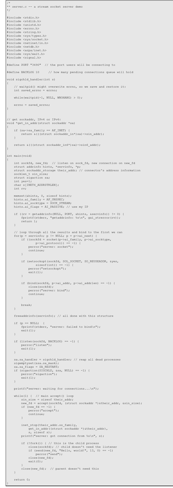

What's in a game?
Goal: Build an extremely simple messaging library on top of TCP
Initial plan: do it in C
A Simple Stream Server

A Simple Stream Client

New idea: Write it in Rust and compile to a C library
[Rust from C] FFI Resources
The Rust paradox
Rust: Making easy things hard so that hard things can be easy
Overall experience: This feels like cheating
A Simple Stream Server
use std::io::prelude::*;
use std::net::{TcpListener};
fn main() {
let listener = TcpListener::bind("127.0.0.1:9001")
.expect("bind failed");
for stream in listener.incoming() {
let mut stream = stream.expect("stream failed");
stream.write("Hi there".as_bytes())
.expect("send failed");
}
}
A Simple Stream Client
use std::io::prelude::*;
use std::net::TcpStream;
use std::str;
const MAX_MESSAGE_LEN: usize = 100;
fn main() {
let mut stream = TcpStream::connect("127.0.0.1:9001")
.expect("connect failed");
let mut buf = [0u8; MAX_MESSAGE_LEN];
let length = stream.read(&mut buf).expect("read failed");
println!("{:?}", str::from_utf8(&buf[0..length])
.expect("utf conversion failed"));
}
use std::str;
fn main() {
let acceptor = messend::Acceptor::new("127.0.0.1", 9001);
loop {
let mut peer = acceptor.accept_wait();
let message = peer.receive_message_wait()
.expect("message unwrap failed");
println!("Client sent: {:?}", str::from_utf8(&message)
.expect("parse bytes"));
peer.send_message(&message);
}
}
use std::str;
fn main() {
let mut peer = messend::initiate("127.0.0.1", 9001);
peer.send_message("Hi there from Rust client".as_bytes());
let message = peer.receive_message_wait()
.expect("message unwrap failed");
println!("Server responded: {:?}", str::from_utf8(&message)
.expect("parse bytes"));
}
use std::ffi::CStr;
use libc::{c_char, uint16_t};
#[no_mangle]
pub extern fn messend_acceptor_create(host: *const c_char, port: uint16_t) -> *mut Acceptor {
let host = unsafe {
CStr::from_ptr(host)
};
let host = host.to_owned().into_string().unwrap();
Box::into_raw(Box::new(Acceptor::new(&host, port)))
}
#ifndef __MESSEND_H__
#define __MESSEND_H__
typedef struct _Acceptor* MessendAcceptor;
typedef struct _Peer* MessendPeer;
MessendAcceptor messend_acceptor_create(const char* host, uint16_t port);
MessendPeer messend_acceptor_accept(MessendAcceptor acceptor);
MessendPeer messend_acceptor_accept_wait(MessendAcceptor acceptor);
void messend_acceptor_free(MessendAcceptor acceptor);
#endif //__MESSEND_H__
#include "messend.h"
int main() {
MessendPeer peer = messend_initiate("127.0.0.1", 9001);
MessendMessage* message = messend_message_create((uint8_t*)"Hi there from C", 15);
messend_peer_send_message(peer, *message);
messend_message_free(message);
MessendMessage* recvMessage = messend_peer_receive_message_wait(peer);
uint8_t* data = messend_message_get_data(recvMessage);
printf("Server responded: %s\n", data);
messend_message_free(recvMessage);
messend_peer_free(peer);
return 0;
}
const str2ab = require('string-to-arraybuffer')
const ab2str = require('arraybuffer-to-string')
const { initiate } = require('./messend')
const peer = initiate("127.0.0.1", 9001)
peer.sendMessage(new Uint8Array(str2ab("Hi there from JavaScript")))
const message = peer.receiveMessageWait()
console.log("Server responded: " + ab2str(message))